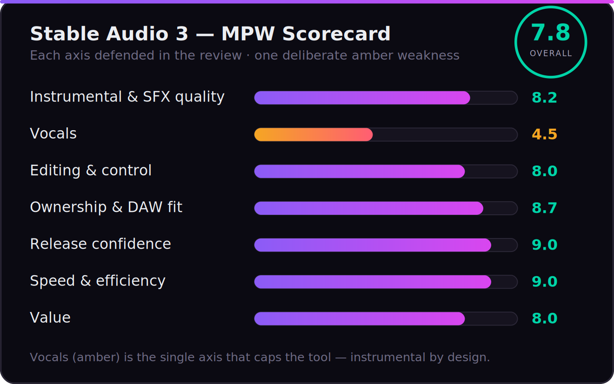

Every review of Stable Audio 3 trips over the same two things. The first is that there are two Stable Audios and almost nobody tells you which one they tested. The second is a claim, repeated everywhere, that Stable Audio “exports MIDI” and drops straight into your DAW as note data. We re-verified that against Stability’s own pages, the model cards, the research paper, and the GitHub repo this session, and it is simply not true of the model that was released in May 2026. The open Stable Audio 3 generates audio, not MIDI. Getting that wrong isn’t a footnote — it’s the whole reason most reviews recommend this tool for the wrong job.
So here is the honest frame, because it’s more interesting than the myth. Stable Audio 3 is not a Suno competitor you judge on “can it write a hit.” It makes instrumental music, sound design, and SFX — no real vocals — which rules it out of vocal songwriting on purpose. What it offers instead is something no other major AI music tool does: it hands you the model. You download the weights, fine-tune them on your own catalog, run them offline with no per-generation fee, and release the output under the cleanest documented licensing in the category. Suno, Udio, and ElevenLabs rent you songs. Stable Audio 3 sells you a studio tool you keep. That distinction is the entire review.
How we approached this. We re-verified every spec, capability, price tier, and licensing line against Stability AI’s live product pages, the Hugging Face model cards, the technical report, and the license terms this session — not older reviews, several of which already conflate the hosted app with the open model or repeat the MIDI error. Where output quality needs first-party audio measurement we haven’t finished, we say so plainly rather than print a fabricated chart. Let’s get into it.
Stable Audio 3 is the most production-native and release-safe AI audio tool there is for instrumental music, beds, and sound design — because you can download the weights, fine-tune them with LoRA on your own audio, run them on a laptop offline, and commercialize the output for free under Stability’s Community License (under $1M revenue). The training data is fully licensed and fully documented (1,278,902 recordings), which makes it the cleanest rights story in AI music. The hard limits: no vocals (instrumental by design), no MIDI (audio output only), the most advanced Large model is API-only, and the on-device models trade some musicality for portability. If you want a finished vocal song, use Suno or ElevenLabs. If you want a sound tool you own and can ship commercially without a lawyer on retainer, this is unique.
The Verdict
The only major AI music model you can actually own and fine-tune — release-safe, fast, and genuinely production-native — held back from a higher score only because it makes no vocals and lives in a narrower instrumental-and-SFX lane.
| Instrumental & SFX quality | 8.2 | |
| Vocals | 4.5 | |
| Editing & control (inpainting, audio-to-audio) | 8.0 | |
| Ownership & DAW fit (open weights, LoRA) | 8.7 | |
| Release confidence (licensed data) | 9.0 | |
| Speed & efficiency | 9.0 | |
| Value | 8.0 |
That overall is a defended judgement, not an average, and the spread is the story. Release confidence (9.0) and speed (9.0) are where Stable Audio 3 genuinely leads: training data that is fully licensed and published down to the recording, and inference fast enough to feel interactive even on a laptop. Ownership & DAW fit (8.7) is the differentiator no rival touches — you get the weights, LoRA fine-tuning, offline use, and no per-generation meter. Instrumental & SFX quality (8.2) is strong across electronic, ambient, and cinematic material, a notch below category-best on busy arrangements. Editing & control (8.0) and value (8.0) are real strengths too. Then the number that caps the whole tool: vocals (4.5) — there effectively aren’t any, by design. That single axis is why a model this capable scores a 7.8 rather than a 9: it is a superb instrumental and sound-design tool, not a general music generator. Every number is defended below.
The Two Stable Audios — Which One Do You Actually Want?
Resolve this before anything else, because it’s the confusion the whole SERP is built on. The name “Stable Audio” points at two genuinely different products.
The first is the hosted web app at stableaudio.com. It’s a polished, subscription-based interface — now running the new 3.0 Large model underneath — where you type a prompt in the browser, get a full-length instrumental track, and on paid tiers run stem separation and editing. This is the “Suno-like” experience: a service you log into and rent. It’s the right choice if you just want finished instrumental audio with no setup.
The second is Stable Audio 3 the open-weight model family — the actually new and interesting thing, and the real subject of this review. Stability released four models on May 20, 2026: 3.0 Small SFX and 3.0 Small (compact, on-device, up to two minutes), 3.0 Medium (higher musicality, up to 6:20), and 3.0 Large (the most advanced musicality, built for high-volume low-latency platforms). Three of the four — Small SFX, Small, and Medium — ship as open weights you can download from Hugging Face, run locally, and fine-tune. Only Large is locked behind the API and self-hosting deals. So when a review says “Stable Audio,” ask: the rented app, or the model you own? They lead to opposite recommendations.
![Decision tree disambiguating the two Stable Audios. One branch is the hosted stableaudio.com web app: a subscription with nothing to install, full instrumental tracks plus stems, running the 3.0 Large model under the hood, whose outcome arrow reads rent finished audio. The other branch is the open-weight Stable Audio 3 family, listing Small SFX and Small (CPU, on-device, up to 2 minutes), Medium (GPU, up to 6:20, open weights), and Large (API-only, not self-hostable), whose outcome arrow reads own and fine-tune the model. A footnote warns to ignore stableaudio.net, an unofficial clone that is not Stability's product.](../images/stable-audio-3-two-products-decision.png)
One more trap worth naming so you don’t fall in it: there is also an unofficial site, stableaudio.net, which is not Stability’s product. Some of its marketing claims — including the “MIDI editing” line that seeded the MIDI myth — describe that third-party wrapper, not the official Stable Audio. When you verify a feature, verify it against stability.ai, stableaudio.com, or the Hugging Face model cards, and ignore the clones.
What Stable Audio 3 Actually Is
Stable Audio 3 is a family of fast latent-diffusion models that generate stereo audio at 44.1kHz from a text prompt, and edit audio you feed in. Architecturally it’s a real step: a novel semantic-acoustic autoencoder that compresses audio into a compact latent, plus a flow-matching generator with adversarial post-training to cut inference steps without losing fidelity. The practical payoff is the headline feature — variable-length generation at per-second granularity, so you ask for exactly the length you need instead of generating a two-minute file mostly full of silence. Medium and Large reach more than six minutes (6:20); Small reaches two.
Four capabilities matter to a producer. Text-to-audio is the obvious one: describe genre, instruments, mood, tempo, and key, and the more specific you are the more predictable the result. Audio-to-audio lets you steer with a reference clip rather than adjectives. Inpainting is the genuinely production-native one — you can regenerate a single segment, run multi-segment edits, or use causal continuation to extend a clip coherently past its endpoint. Stability frames the use cases exactly as a producer would: transient editing in percussive sounds, generating ideas for an unfinished song, extending a short recording. And LoRA fine-tuning — documented and supported for Small and Medium — lets you bias the model toward your own sound by training on your own non-copyrighted audio. That last one is the quiet superpower, and we’ll come back to it.
It also does sound effects, not just music. The Small SFX model is purpose-built for foley and design — footsteps, risers, UI sounds, ambiences — prompted the same way you’d prompt for music. For anyone scoring video, games, or podcasts, a single tool that covers both the bed and the sound design is a real workflow win.
How Good Is the Output, Really?
Capability and quality aren’t the same thing, so here’s the honest picture from mechanism and consensus rather than a hype reel. On instrumental textures — electronic, ambient, cinematic, lo-fi, drone, beds — Stable Audio 3 is genuinely strong: clean low end, usable transients, and the kind of mix-ready tonal balance that drops into a session without a fight. The big architectural gain in 3.0 over the 2.x line is structure and melodic coherence over length: the model holds a musical idea across minutes instead of wandering, which is the criticism that dogged earlier generative audio. For loops, underscores, and sound design, the output is reliably usable.
The honest qualifiers. On complex, busy arrangements — dense multi-instrument pop or anything that needs a hooky, foregrounded melody to carry a song — the consensus across early hands-on reviews is more measured: it’s very good background and texture, not a finished foreground composition. And the deliberate ceiling is vocals, which we treat in its own section because it’s the single fact that decides the tool. The fairest one-line summary: Stable Audio 3 wins on instrumental texture, sound design, speed, and control; it does not try to win the “finished vocal song” contest, and you shouldn’t buy it expecting to.
Break it down by material and the picture sharpens. Ambient, cinematic, drone, and textural electronic are where it’s strongest — evolving pads, granular beds, tension risers, the kind of scoring underlay that needs to sit beneath dialogue or picture without demanding attention. Lo-fi, downtempo, and house-adjacent loops come out reliably usable, with groove and tonal balance you’d actually keep in a session. Where it gets conditional is anything that lives or dies on a foregrounded hook: a memorable topline, a lead riff that has to be the thing, a drum groove pocketed to swing exactly right. The model hands you something competent and on-genre, but the last ten percent — the part that makes a listener replay a track — is still the producer’s job, not the prompt’s. Treat the output as high-quality raw material rather than a finished arrangement and it almost never disappoints; expect a master out of one prompt and it will.
The model tier matters more than most reviews admit. Small SFX and Small trade musicality for portability — running on a CPU or on-device in under two minutes is a genuine feat, but you can hear the compromise against the bigger models. Medium is the producer’s sweet spot: open weights, the best quality you can actually self-host, six-plus minutes of coherent output, and inference measured in seconds on a recent GPU or Apple Silicon. Large is the quality ceiling — the most advanced musicality in the family — but it’s API-only, so the moment you reach for the best-sounding result you’re renting again rather than owning. For most producers the honest recommendation is Medium, because it’s the one model where “you own the tool” and “it sounds good” genuinely overlap.
There’s also a quality lever one-shot generators simply don’t hand you: iteration through editing instead of re-rolling. Because Stable Audio 3 supports inpainting and audio-to-audio, the real workflow isn’t generate, hate it, generate again, and hope. It’s generate, keep the eighty percent that works, regenerate only the bar that doesn’t, and steer the next pass with a reference clip. That edit loop is where output quality compounds over a session — and it’s a far more producer-like relationship with a tool than pulling a slot-machine lever until a whole track happens to land.
First-party measurement — in progress, stated honestly
Our edge is running generated output through the same BS.1770 loudness, true-peak, and spectral analysis we use on commercial masters, to show where Stable Audio’s renders actually sit on integrated loudness, dynamics, and tonal balance versus a target. That measured chart isn’t in this version yet, so we’re not going to print one — a fabricated graph is worse than none. We’ll swap in the measured data, across the Small, Medium, and Large models, when the test set is complete.

Why a Producer Actually Cares: You Own the Tool
This is the section that should decide it, and it’s the one every other review buries under a false MIDI claim. The reason Stable Audio 3 belongs in a producer’s kit isn’t how a four-bar clip sounds in isolation — it’s that, uniquely among the major tools, you own the model. Download the weights for Small or Medium from Hugging Face and they’re yours: run them offline, with no API, no per-generation fee, no rate limit, and no risk that a vendor changes the terms or sunsets the product out from under your workflow. For a working producer, “the tool can’t be taken away” is not a small thing.
Then it gets better, because owning the weights means you can fine-tune them. LoRA training — documented by Stability for Small and Medium — lets you train the model on your own non-copyrighted audio and bias every future generation toward your sound: your drum character, your harmonic palette, your ambience. No song-first generator offers anything close. Suno, Udio, and ElevenLabs give you a prompt box; Stable Audio gives you a model you can teach. That is the difference between renting a sound and building one.
It’s worth being concrete about what that buys you over time, because it’s easy to wave past. Fine-tune Medium on a few dozen of your own stems — your kits, your synth patches, your room — and you walk away with a private model that defaults to your sonic signature, runs on your laptop, and costs nothing per generation forever. It can’t be deprecated, repriced, rate-limited, or have its terms of service rewritten next quarter, because it’s a file on your drive. Every hosted generator is one funding round or policy change away from breaking the workflow you built on it; a downloaded model with your LoRA on top is the one AI music asset a producer can actually treat as infrastructure. For anyone building a catalog or a business on top of this, that durability is worth more than a couple of points of raw musicality.
![Ownership map comparing Stable Audio 3 against the song-first generators Suno, Udio, and ElevenLabs across five rows. Stable Audio 3 shows a checkmark for downloading the model weights, a checkmark for fine-tuning on your own sound with LoRA, and a checkmark for running offline with no per-generation fee; it shows a times mark for finished vocal songs and a times mark for MIDI note export. The Suno, Udio, and ElevenLabs column shows times marks for downloading the weights, fine-tuning, and running offline, a checkmark for finished vocal songs, and a times mark for MIDI note export. A banner across the bottom reads: Stable Audio sells you a tool you keep; the others rent you songs.](../images/stable-audio-3-ownership-map.png)
Now the honest handoff, stated as plainly as we’d want it stated to us. Output is audio: 44.1kHz stereo WAV-style renders. There is × no MIDI export — you do not get note data to re-voice with your own instruments, and if your workflow depends on that, this is the wrong tool. Editing is in the audio domain via inpainting and audio-to-audio, which is powerful for reworking and extending material but is not the same as a MIDI piano-roll. The hosted stableaudio.com app adds stem separation on premium tiers, which is the closest thing to a clean multitrack handoff; the open models give you the mixed render plus the editing tools. So the “lands in your DAW” story is real, but it’s rendered audio and stems and a model you fine-tune — not MIDI. Know which of those you need before you build a session around it. If MIDI out is the deal-breaker, our best AI music generators guide points to the tools that actually offer it.
The Vocals Problem, Stated Plainly
Stable Audio 3 does not do vocals, and that is a design choice, not a bug. Its music training data is explicitly tagged instrumental — the model literally prepends “VocalType: Instrumental” during music generation — so it produces beds, textures, instrumentals, and sound effects, full stop. A handful of community fine-tunes on the open weights have experimented with vocal generation, but it is not a capability of the base model and you should not plan around it.
Read positively, this is exactly why it belongs in a producer’s DAW rather than a songwriter’s prompt box. It doesn’t try to fake a lead vocal and fail; it gives you a clean, controllable instrumental foundation you can build a real vocal over yourself. But be honest about what it rules out: if your output is “a finished song with a singer,” Stable Audio is the wrong tool and Suno, Udio, or ElevenLabs Music are the right ones. Many producers will run both — a vocal generator for the song, Stable Audio for the score, the beds, and the sound design.
In practice that pairing has a clean shape. Build the instrumental in Stable Audio 3 — prompt the bed, inpaint the transitions, extend it to length — render it out, and bring it into your DAW as the foundation. Then track the vocal over it: a real singer, your own performance, or a vocal-capable AI tool like ElevenLabs Music or Suno generating an a-cappella you comp and tune. You get the part Stable Audio is best at (an owned, editable, release-safe instrumental) without forcing it to do the part it was deliberately built not to do. Treated as the score-and-sound-design half of a two-tool stack rather than a one-box song machine, the “no vocals” limitation stops being a wall and becomes a division of labor.
Can You Release It? Licensing, Honestly
This is where Stable Audio 3 has its strongest and most misunderstood story, so let’s state it precisely. The models are trained entirely on fully licensed and Creative Commons data, and Stability published the full attribution: 1,278,902 recordings — 806,284 licensed from AudioSparx and 472,618 from Freesound under CC-0, CC-BY, or CC-Sampling+, with music recordings screened by an automated tagger and a third-party content-detection firm to strip anything copyrighted. That is the cleanest, most documented provenance of any major AI music tool, and it’s a direct answer to the litigation dogging Suno and Udio. Stability also has strategic alliances with Universal Music Group and Warner Music Group framed around responsible AI in music — a signal the major labels are working with this tool, not suing it.
On the commercial terms — the single most error-prone fact in the SERP, so here it is straight from Stability’s license. Under the Stability AI Community License, you own your outputs and may distribute and commercialize them, free, as long as you or your organization generate under USD $1M in annual revenue. Only above $1M do you need a paid Enterprise License (which adds legal indemnification). In other words, for the independent producer and the small studio — the vast majority of this audience — commercial use of Stable Audio output is genuinely free. The “friction” other reviews wave at is real only for businesses over $1M in revenue. Don’t let a >$1M edge case scare you off a tool that, for you, is free to ship.
Now the catch that no marketing page leads with, because it’s the part that bites. “Licensed training” and “cleared to release” protect Stability’s legal position and your right to use the output — they do not automatically mean you own a registrable copyright in a purely AI-generated track. Under current U.S. law, work lacking meaningful human authorship may not be copyrightable, so a one-prompt instrumental could be something you’re cleared to use but can’t fully protect as your own. And streaming platforms are tightening their scrutiny of AI-generated music. The practical, defensible move is to treat Stable Audio output as raw material you finish substantially yourself — arrange it, process it, play over it — which is exactly the workflow the tool is built for. For the full picture, read our deep dives on AI music licensing and how to release AI music. This is general information, not legal advice; for a specific release, confirm with a qualified professional.
The Real Cost
For most producers, the honest answer is “nothing.” The open weights for Small SFX, Small, and Medium are free to download and run, and commercial use of your output is free under the Community License below $1M revenue. You pay in hardware and setup time, not licensing.
The hosted stableaudio.com app is the paid path for people who don’t want to run anything: a free tier for personal, non-commercial use; paid creator/pro tiers for individual commercial use; and Enterprise for organizations. Specific monthly numbers move with the product, so verify the current figures on stableaudio.com/pricing rather than trusting any number quoted secondhand — we won’t print a price that might be stale by the time you read this. The most advanced Large model is reached through the paid Stability API or enterprise self-hosting. And the one real recurring cost — the Enterprise License — applies only to self-hosting businesses over $1M in revenue. Map your situation to the right row: experimenter on a laptop pays zero; content shop wanting a no-setup app pays a subscription; large company productizing it pays Enterprise.
The cost that does fall on the self-host path is hardware, not licensing, and it’s modest. Small SFX and Small are designed to run on a CPU or on-device, so an ordinary modern laptop handles them. Medium is the one that wants a discrete GPU or recent Apple Silicon — on that class of machine it generates in seconds, and if you already own a rig built for music production or gaming you very likely meet the bar without buying anything. Weigh that one-time hardware reality against the alternative: a hosted generator bills you per generation or per month for as long as you use it, and those credits never stop. Run the numbers over a year of steady use and an owned model on hardware you already have is usually the cheaper path by a wide margin — before you even count the value of never being rate-limited mid-session.
Who Should (and Shouldn’t) Use It
Use Stable Audio 3 if you make instrumental music, beds, underscores, loops, or sound design and you want a tool you control: a producer scoring video or games, a beatmaker who wants release-safe textures, a sound designer who needs foley and music from one model, or a developer who wants to fine-tune an audio model on a private catalog and run it offline. For that person, the combination of open weights, LoRA fine-tuning, fully-licensed data, free commercial use under $1M, and laptop-class speed is genuinely without equal in 2026. It is the closest thing to owning a studio instrument that the AI music field has produced.
Be cautious or look elsewhere if your output is a finished vocal song — there are no vocals, and that won’t change with a prompt — or if your workflow depends on MIDI note data you can re-voice with your own instruments, which this tool doesn’t produce. If you want the highest possible musicality with zero setup, the Large model is API-only, so you’re back to renting. And if you’re a business over $1M in revenue planning to self-host at scale, price in the Enterprise License before you commit. Match it to the job — instrumental and sound-design material you own and ship, not vocal hits you re-record — and Stable Audio 3 delivers something no rival does.
Put Stable Audio 3 to the Test: Three Exercises
Thirty focused minutes — twenty in the tool, ten in the license — will teach you more than any review. These three graded exercises are built to expose exactly where Stable Audio 3 shines and where it stops.
- On the hosted app or a local Small/Medium model, prompt a one-to-two-minute instrumental in a style you know — specify genre, instruments, tempo, mood, and key — and listen end to end.
- Use inpainting to regenerate just one segment (say, a transition) and let the rest stand. Does the new section actually fit the material you kept?
- Decide honestly: did segment-level editing get you to a usable bed faster than re-rolling the whole thing? That’s the production-native control story, tested on your own ears.
- Download the Small or Medium weights from Hugging Face and generate a track offline. Note the real inference time on your hardware against the “under two seconds on an H200 / a few seconds on an M4” claim.
- Pull the render into your DAW and try to rebuild a part with your own instrument. Feel exactly where the audio-only handoff stops — there’s no MIDI — and decide if that wall matters for how you work.
- On the hosted app, run stem separation on a generated track and check whether the stems are clean enough to actually mix. Verify, don’t assume. See our AI stem separation guide for what “clean” should look like.
- Assemble a small set of your own non-copyrighted audio and run a LoRA fine-tune on Small or Medium following Stability’s documentation. Generate before and after, and judge whether the model has genuinely moved toward your sound.
- Run a finished render through a LUFS meter; note integrated loudness and true peak against a −14 LUFS streaming target so you know what mastering it still needs.
- Write the one-line answer to “can I legally ship this, the way I intend to ship it?” — covering both the Community-License revenue threshold and the copyright-ownership question. If you can’t answer it cleanly, that’s the review’s real verdict for your situation.